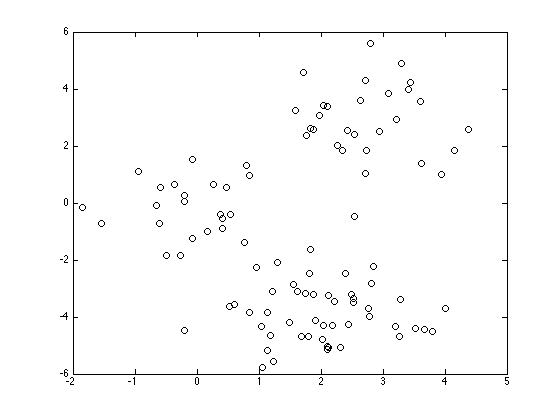
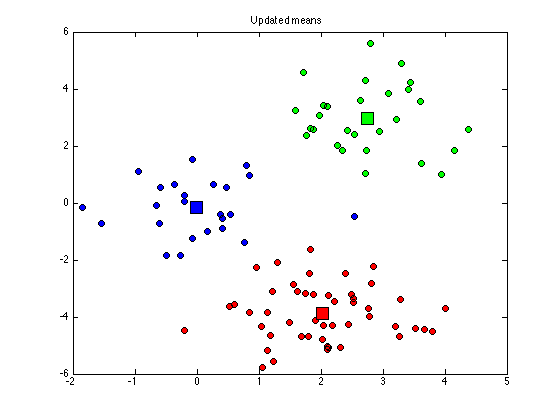
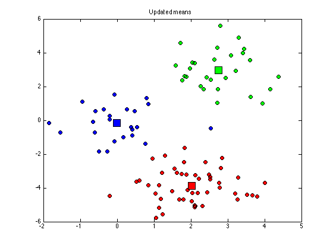

Contents
kmeansexample.m
From A First Course in Machine Learning, Chapter 6. Simon Rogers, 01/11/11 [simon.rogers@glasgow.ac.uk] Example of K-means clustering
clear all;close all;
Load the data
load ../data/kmeansdata
Plot the data
figure(1);hold off plot(X(:,1),X(:,2),'ko');
Randomly initialise the means
K = 3; % The number of clusters
cluster_means = rand(K,2)*10-5;
Iteratively update the means and assignments
converged = 0;
N = size(X,1);
cluster_assignments = zeros(N,K);
di = zeros(N,K);
cols = {'r','g','b'};
while ~converged
Update assignments
for k = 1:K di(:,k) = sum((X - repmat(cluster_means(k,:),N,1)).^2,2); end old_assignments = cluster_assignments; cluster_assignments = (di == repmat(min(di,[],2),1,K)); if sum(sum(old_assignments~=cluster_assignments))==0 converged = 1; end % Plot the assigned data figure(1); hold off for k = 1:K plot(X(cluster_assignments(:,k),1),X(cluster_assignments(:,k),2),... 'ko','markerfacecolor',cols{k}); hold on end title('Updated assignments'); % Update means for k = 1:K if sum(cluster_assignments(:,k))==0 % This cluster is empty, randomise it cluster_means(k,:) = rand(1,2)*10-5; else cluster_means(k,:) = mean(X(cluster_assignments(:,k),:),1); end end % Plot the means figure(1) for k = 1:K plot(cluster_means(k,1),cluster_means(k,2),'ks','markersize',15,... 'markerfacecolor',cols{k}); end title('Updated means');


 
 end